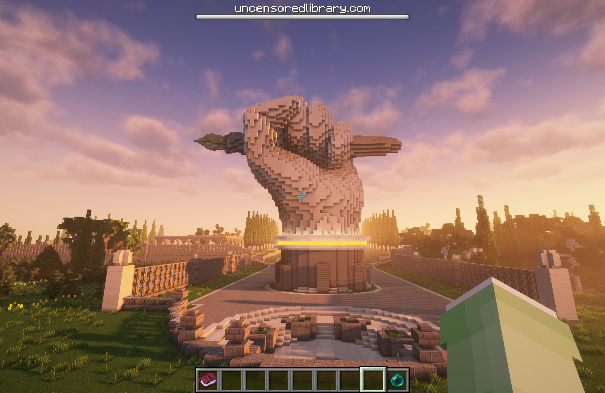
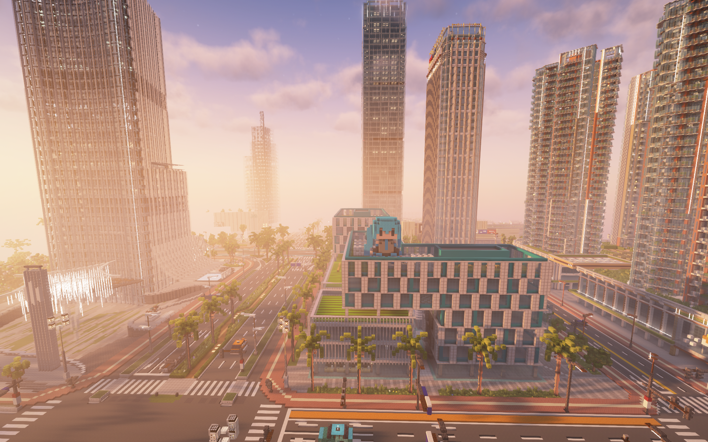
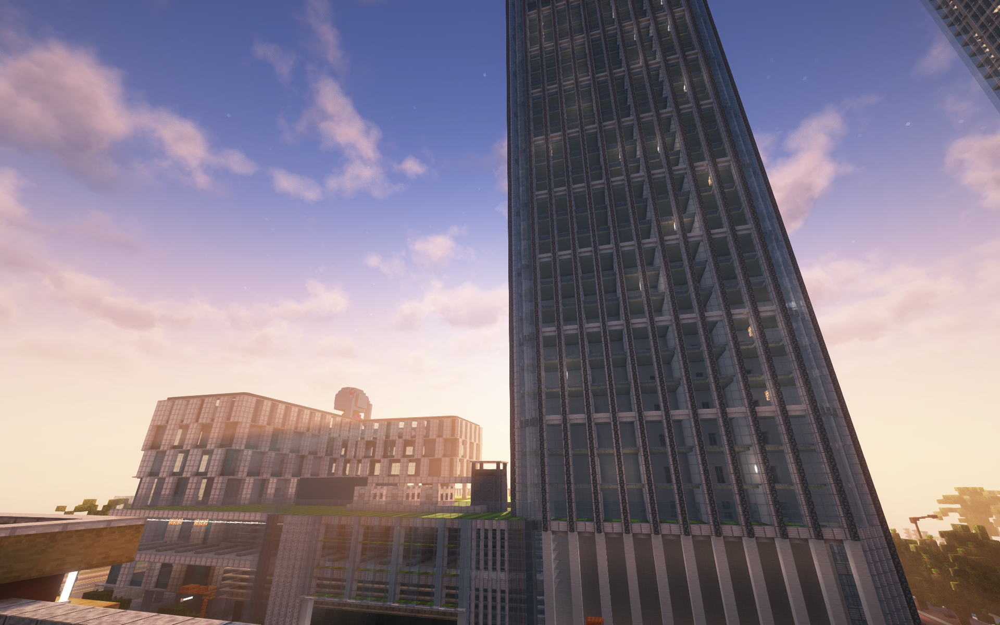
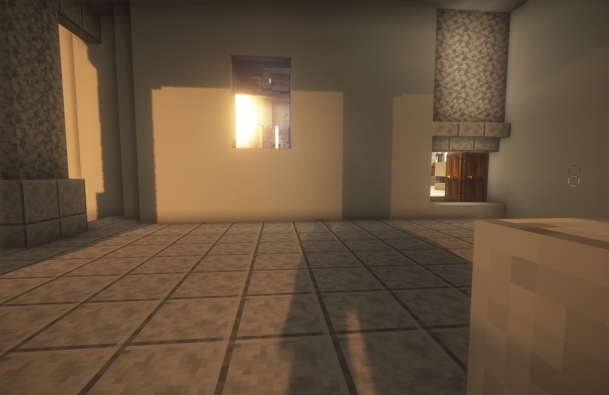

个人网站
从 HTML 和 CSS 开始，逐步构建属于自己的网络空间。
PERSONAL SPACE · 2026
一个喜欢探索技术、理解原理，并将想法变成现实的学生。 这里记录我的项目实践、Minecraft 创作与学习旅程。
LEARN · BUILD · EXPLORE
ABOUT ME
我正在学习编程、软件工具与计算机技术。 我相信，最好的学习方式之一，就是亲手把想法变成作品。
WHAT I'M BUILDING
从 HTML 和 CSS 开始，逐步构建属于自己的网络空间。
探索建筑设计、服务器技术与虚拟世界中的创造。
整理知识、记录实践，让每一次探索都留下痕迹。
MINECRAFT · CREATIVE ARCHIVE
从建筑设计、城市建设到服务器规划， 记录每一个想法从方块世界走向完整作品的过程。

FEATURED PROJECT / 01
展示建筑外观、空间布局与建造细节， 记录从构思到落地的创作过程。

CITY BUILDING
记录城市布局、街区设计与公共建筑。

URBAN DESIGN
从不同视角记录城市的发展与建设成果。

SERVER PROJECT
记录服务器建设、规则、运维与技术实践。
KEEP IN TOUCH
欢迎通过 GitHub 了解我的项目。
访问我的 GitHub ↗